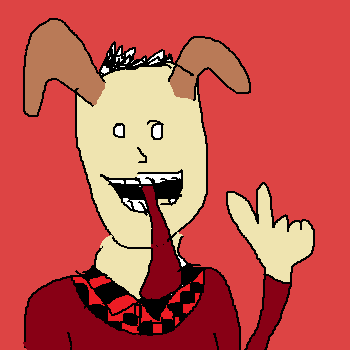

Dylan Pride

Hello There!
My name is Dylan and I am proud of everything I do.
Welcome to my website where I illustrate who I am, what I love, and what I do.
My name is Dylan and I am proud of everything I do.
Welcome to my website where I illustrate who I am, what I love, and what I do.
I'm a year old software developer, born and raised in beautiful Vancouver


I like to dream big! To give my life a sense of purpose and to keep myself motived, I enjoy recording my major goals.
Technology can be used to solve many problems. My love of technology has driven me to become a computer programmer.
My favourite hobbies include: creating computer games, leading table-top role play games, and playing games of strategy.
I'm a life-long student, constantly seeking more knowledge.
I love cats. I love every kind of cat. I just want to hug all of them, but I can't. I can't hug every cat.
I love cats. I love every kind of cat. I just want to hug all of them, but I can't. I can't hug every cat.
I love cats. I love every kind of cat. I just want to hug all of them, but I can't. I can't hug every cat.
I love cats. I love every kind of cat. I just want to hug all of them, but I can't. I can't hug every cat.
When the stress of the world becomes too much handle, the realm of fantasy provides a healthy escape from reality.
I love cats. I love every kind of cat. I just want to hug all of them, but I can't. I can't hug every cat.
In an ever-evolving society, it's important to stay up to date on what's hip and trendy in the modern world. Paying attention to the pop industry allows me to stay aware of what's popular and what isn't.
Check out this pop music game I made, to celebrate Lady Gaga's 2008 hit single Just Dance.
me